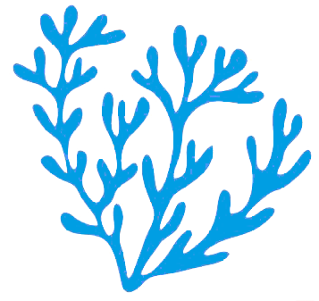
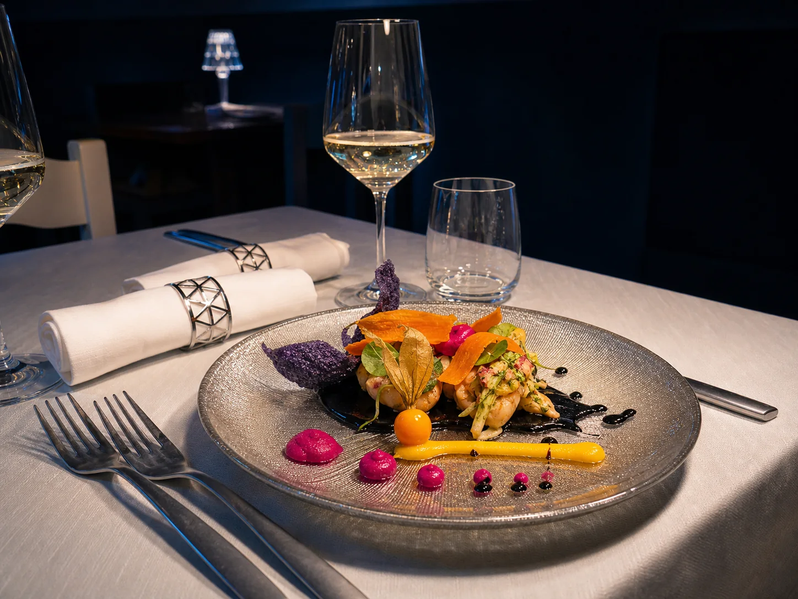
Piatti, materia, sala
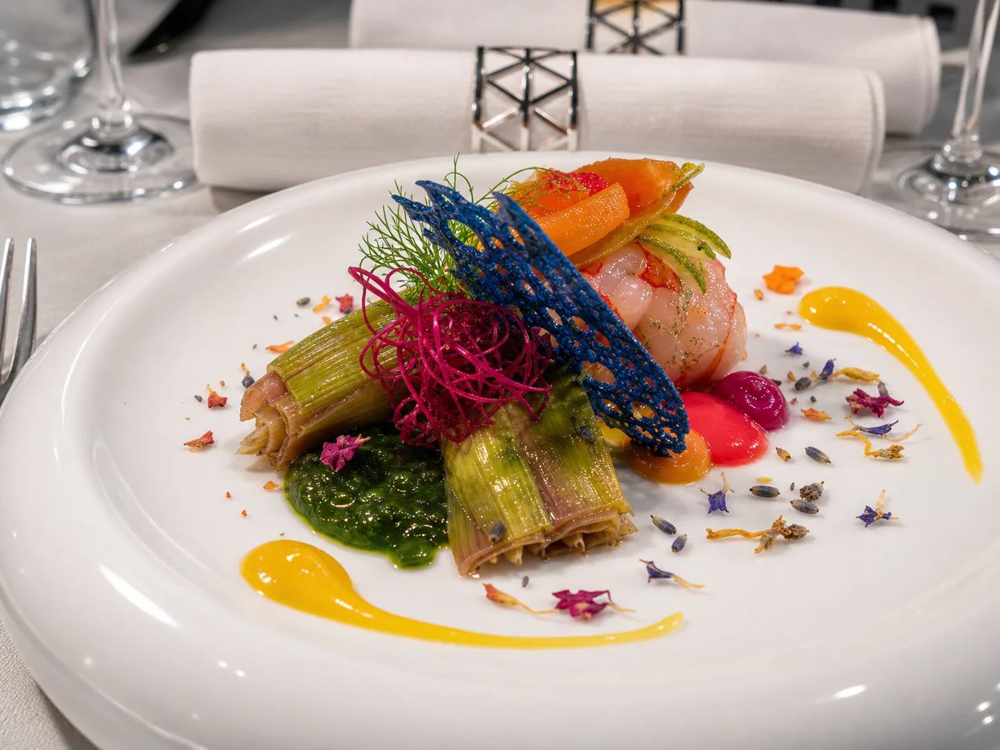
Contrasti
Gamberi, vegetali, agrumi

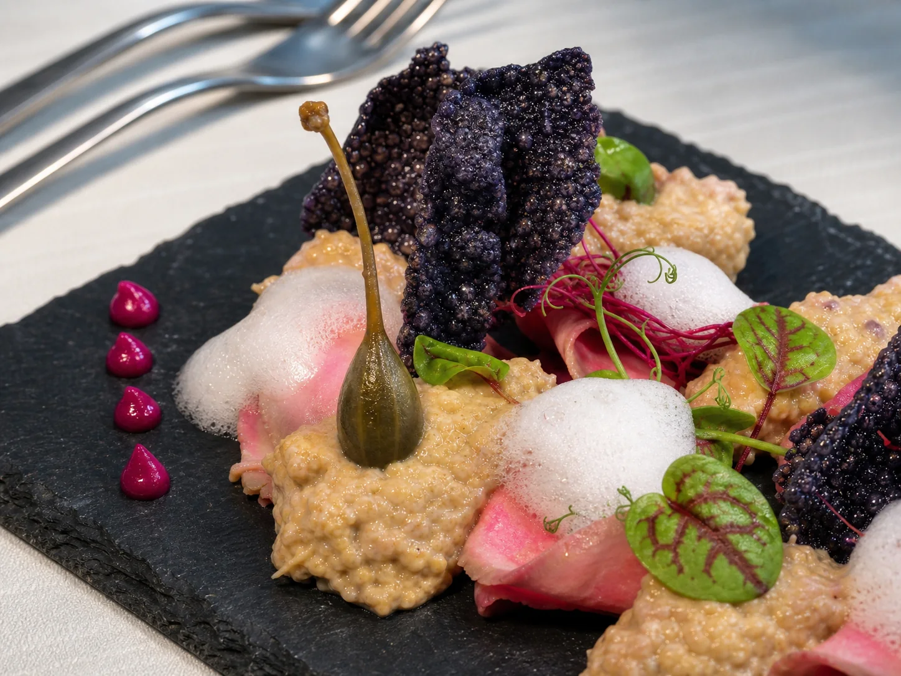
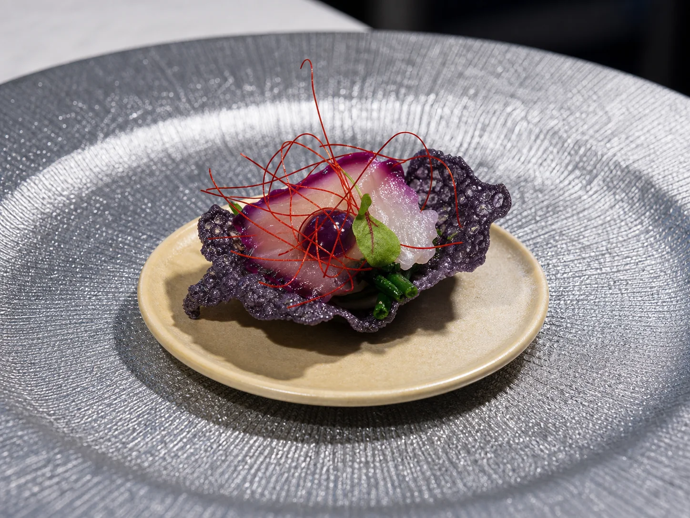
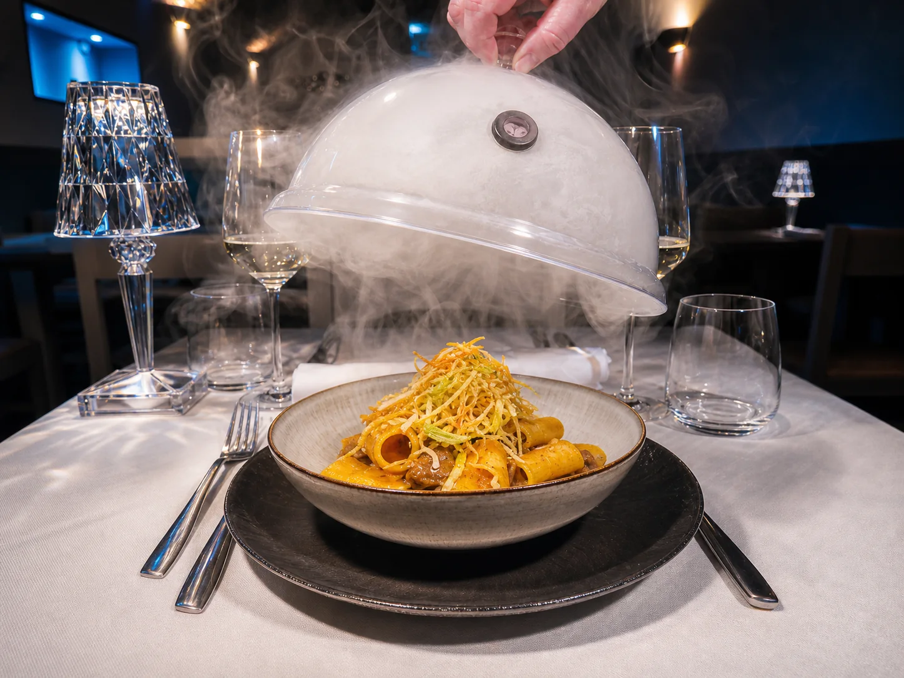
Servizio
Piatti affumicati
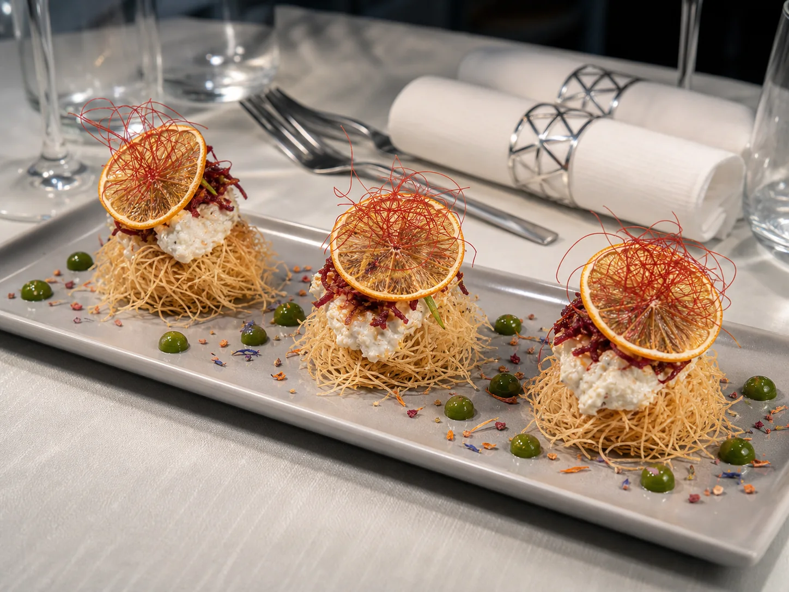
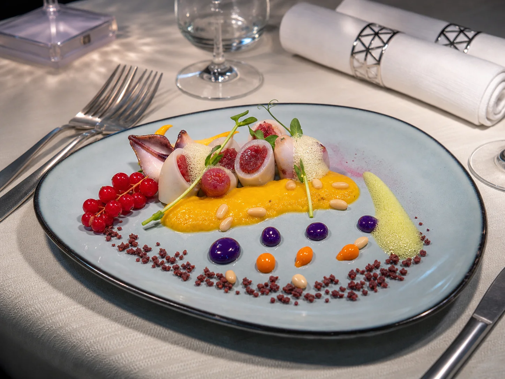
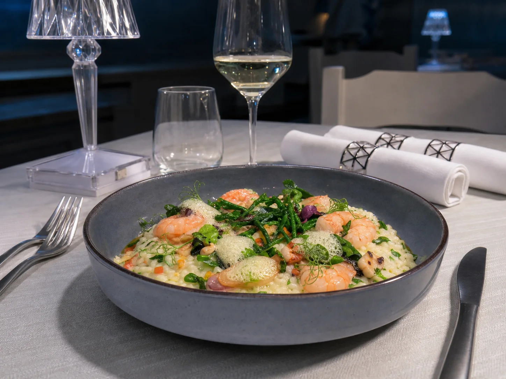
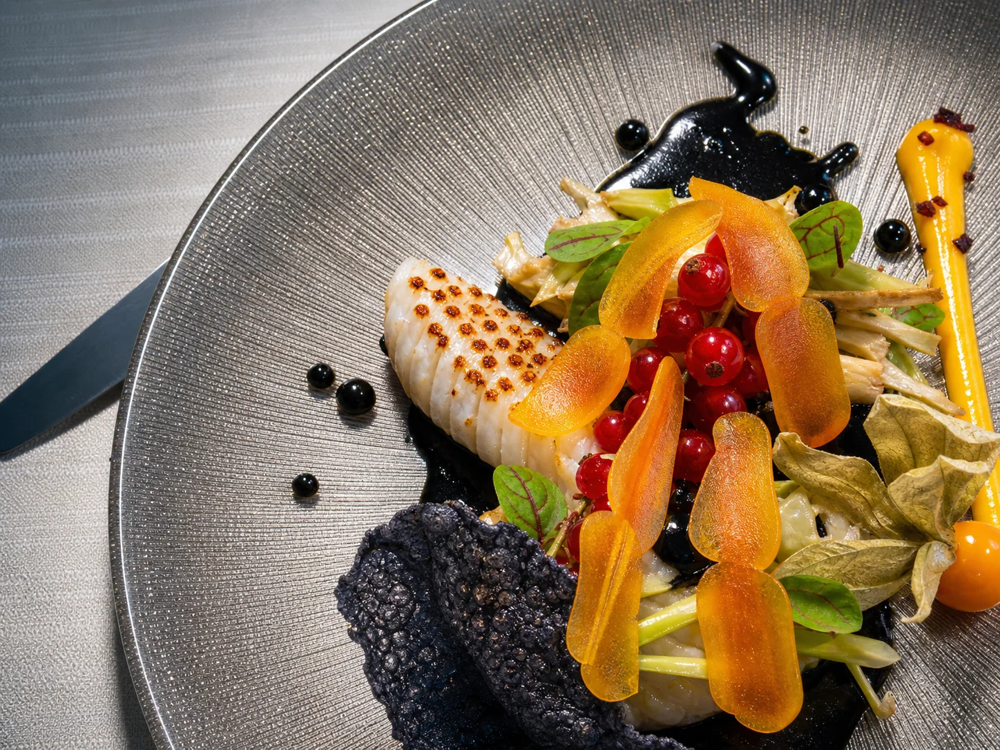
Composizione
Colore, mare, precisione
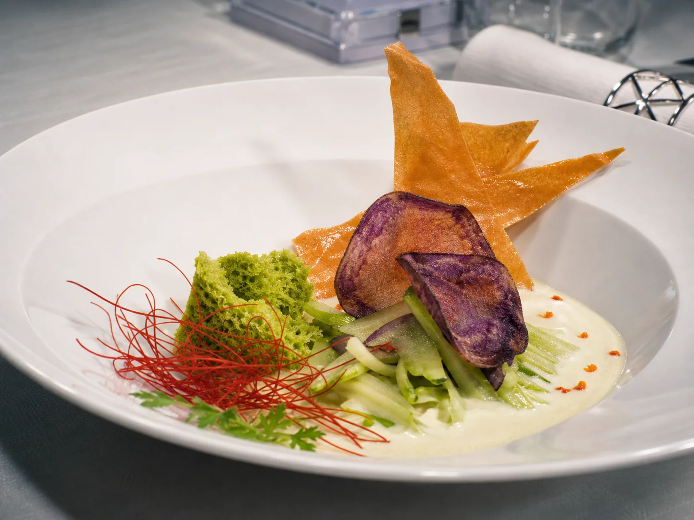
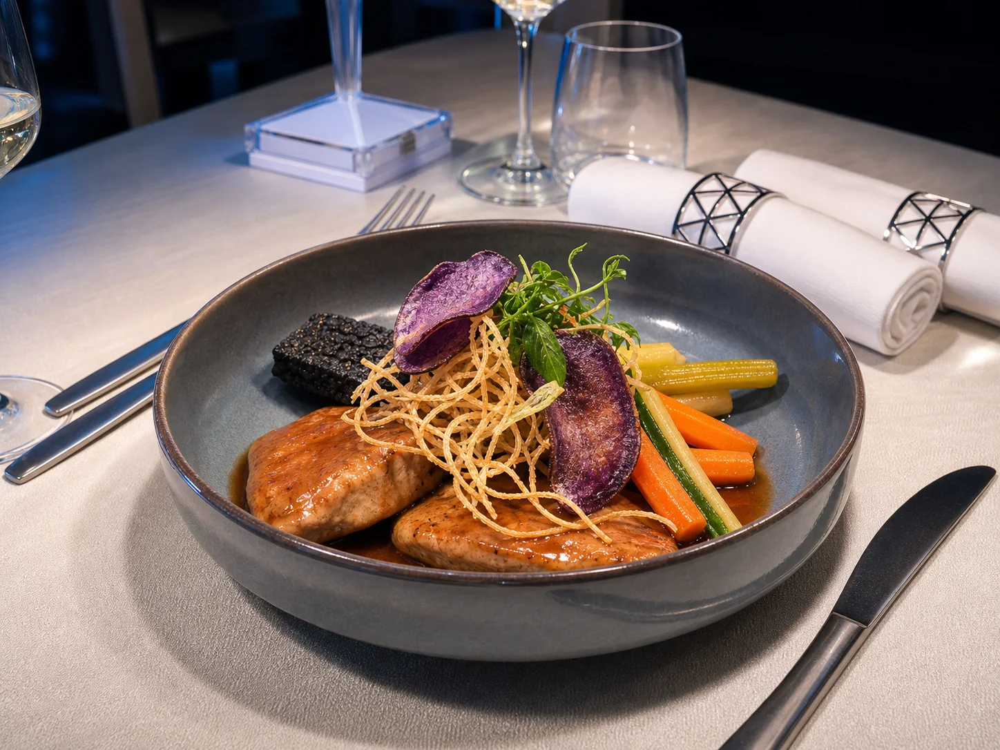
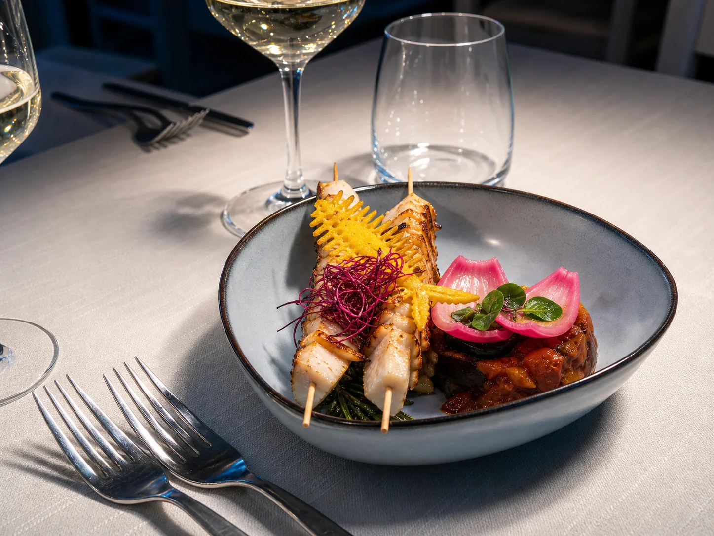
Dalla galleria alla carta
I piatti cambiano con stagione e materia prima. La carta cucina e la cantina restano il riferimento per scoprire le proposte disponibili.